Date Taken: Fall 2025
Status: Work in Progress
Reference: LSU Professor Daniel Donze, ChatGBT
An executable is a specially formatted file that contains all the information the operating system needs to properly load and run a program in memory. It includes the starting instruction, memory relocations, required libraries, and other metadata.
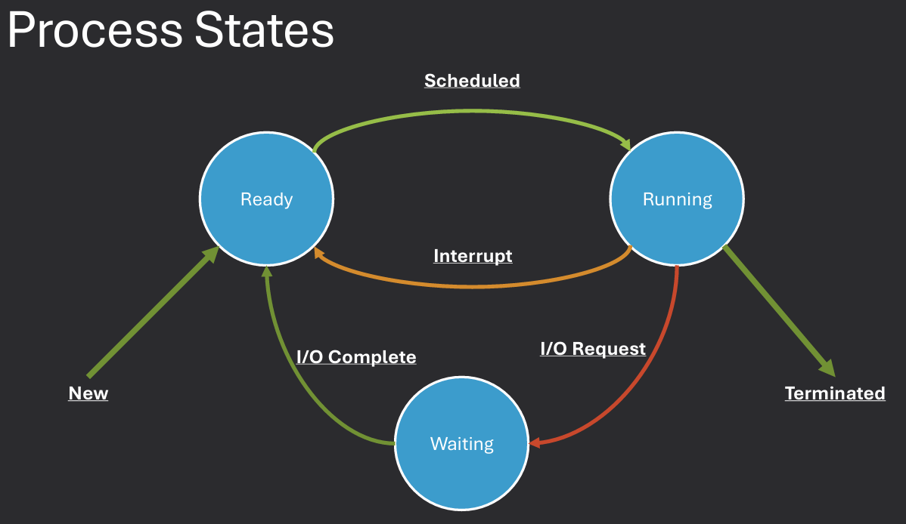
When a program is loaded into memory, it becomes a process that is ready to run. Processes can exist in several different states depending on what they are currently doing:
A process requires several resources to execute properly and interact with the system:
A process's memory is divided into several regions, each with a specific purpose:
malloc or similar functions..data - Stores initialized variables..bss - Stores uninitialized variables..txt - Contains executable code..rodata - Stores constants, strings, and jump tables..init - Initialization routines.Operating systems have to manage a variety of tasks to ensure that programs run efficiently and safely. Some key challenges include:
The operating system keeps track of each process in order to manage them effectively. This includes storing a variety of details for every process:
All of this information for a single process is stored in a structure commonly called a process descriptor.
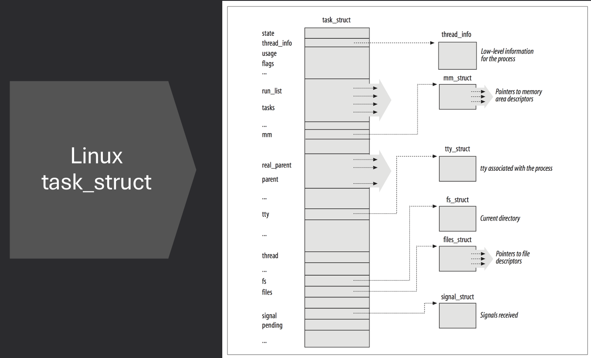
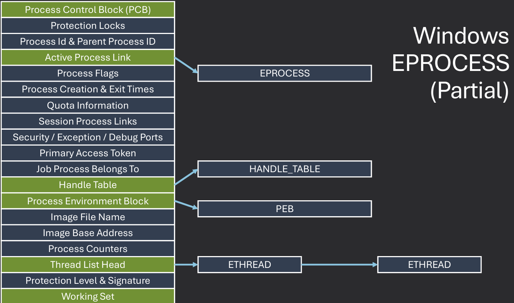
In Windows, the process control block (PCB) is known as the EPROCESS structure. It contains all the information the OS needs to manage a process, including its state, memory usage, and resource handles. Kernel space structures like EPROCESS are not directly accessible to user-mode applications for security and stability reasons. Information needed for scheduler, dispatcher, and interrupt accounting is stored in the KPROCESS structure, which is embedded within the EPROCESS structure. Fields: Context Switches, Affinity, Priority, Process State, etc.
The PEB (Process Environment Block) is another important structure that holds information about the process's environment, such as loaded modules and environment variables. User space applications can access the PEB to retrieve information about their own process. Used by heap manager, image loader, and other subsystems. Fields: Thread local storage, Heap pointer, Loaded modules, etc.
The operating system maintains a list of all active processes, often referred to as the process table. This table allows the OS to quickly find and manage processes as needed. Each entry in the process table corresponds to a process descriptor (like EPROCESS in Windows or task_struct in Linux). The OS uses this table to schedule processes, allocate resources, and handle interprocess communication.
Doubly linked list is commonly used to implement the process table, allowing efficient insertion and deletion of processes.
Each process descriptor contains pointers to the next and previous processes in the list, enabling quick traversal
Hash Tables can also be used for faster lookups based on process IDs or other attributes.
This allows the OS to quickly find a process descriptor without having to traverse the entire list.
Use Pid as a lookup entry to find the process descriptor in the hash table.
Why does this work? Because Pid is unique to each process.
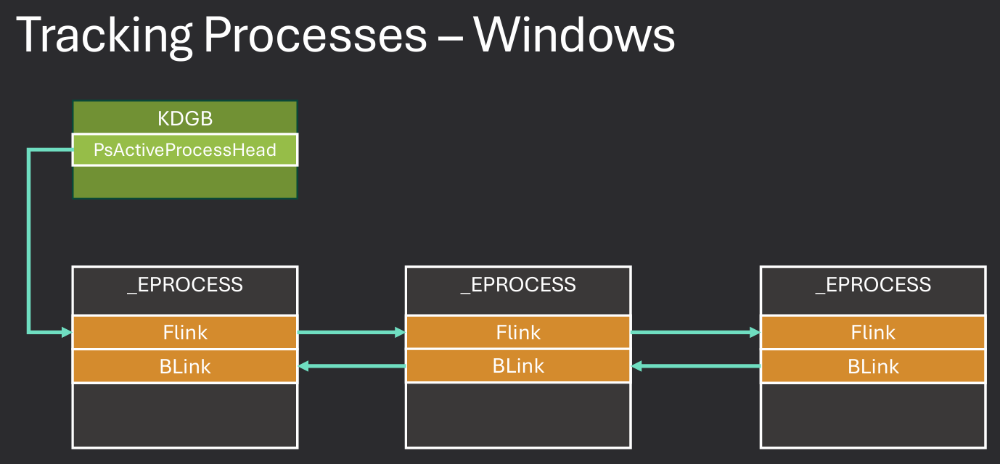
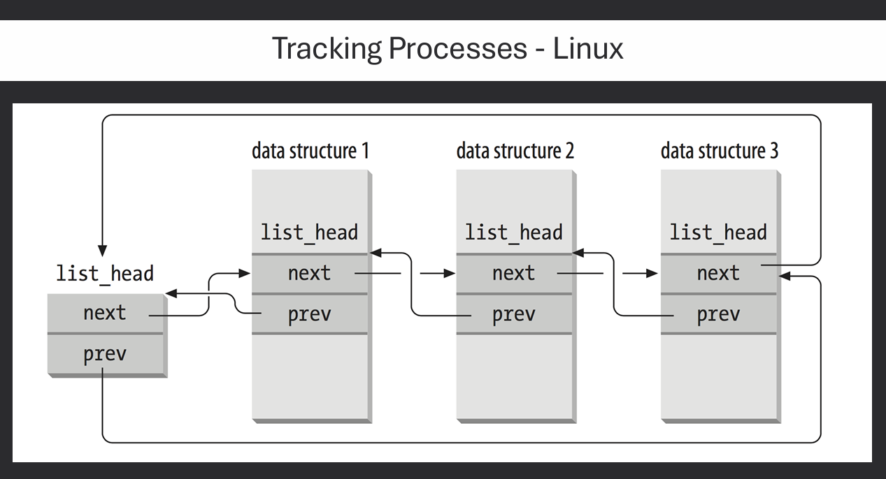
Process creation is a fundamental operation in an operating system, allowing new processes to be spawned from existing ones.
This is typically done using system calls like fork() in Unix/Linux or CreateProcess() in Windows.
When a process is created, the OS must allocate resources for it, including memory, file handles, and CPU time. The new process is usually a copy of the parent process, inheriting its attributes and resources. Generally, operating systems closely track the relationships among processes, maintaining a parent-child hierarchy.
After creation, the new process can be scheduled to run independently of the parent process. This allows for multitasking and the execution of multiple processes concurrently.
Process creation can be resource-intensive, so operating systems often implement optimizations like copy-on-write to minimize the overhead of duplicating resources. Process may create a clone of themselves (traditional multi-processing) or a new process with a different program loaded (exec).
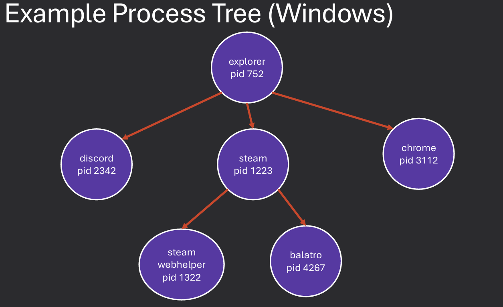
When a process creates another process, the creating process is referred to as the parent, and the newly created process is the child. This relationship is important for resource management and process control.
The parent process can monitor and control its child processes, including waiting for them to finish and retrieving their exit status. Child processes typically inherit certain attributes from their parent, such as environment variables, open file descriptors, and user permissions. However, they may also have their own unique attributes, such as a different process ID and memory space.
The OS maintains a hierarchy of processes based on these parent-child relationships, which can be visualized as a tree structure. This hierarchy helps the OS manage resources and enforce security policies among related processes.
Unix uses the fork() system call to create a new process by duplicating the calling process. The new process, called the child, is an exact copy of the parent process except for the returned value.
exec() is often used after fork() to replace the child's memory space with a new program. This allows the child process to run a different program than the parent.
Parent and child share data and handles resources, but have separate memory spaces. fork() returns the child PID to the parent and 0 to the child. This allows both processes to determine their roles after the fork. Note that changes to variables in the child process do not affect the parent process, and vice versa, due to separate memory spaces.
Note how wasteful it would be to duplicate all of a process's memory when creating a new process with fork(). Just to replace it with exec() shortly after. To optimize this, many operating systems implement a technique called Copy on Write (COW). With COW, the OS does not immediately duplicate the parent's memory for the child process.
Instead, both processes share the same memory pages until one of them attempts to modify a page. At that point, the OS creates a copy of the page for the modifying process, allowing it to make changes without affecting the other process.
This approach reduces memory usage and improves performance, especially when creating multiple processes that initially share the same data.
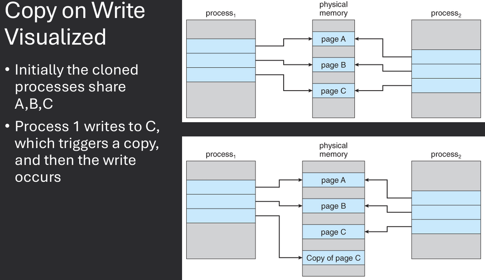
In Linux, the clone() system call is used to create a new process or thread.
It provides more control over what resources are shared between the parent and child processes compared to fork().
The clone() function takes several flags that determine which resources are shared, such as memory space, file descriptors, and signal handlers.
pid_t fork(void);
Returns 0 in child process, child's PID in parent process, -1 on error.
In Windows, the CreateProcess() function is used to create a new process.
It provides a wide range of options for configuring the new process, including setting security attributes, specifying the command line, and controlling input/output redirection.
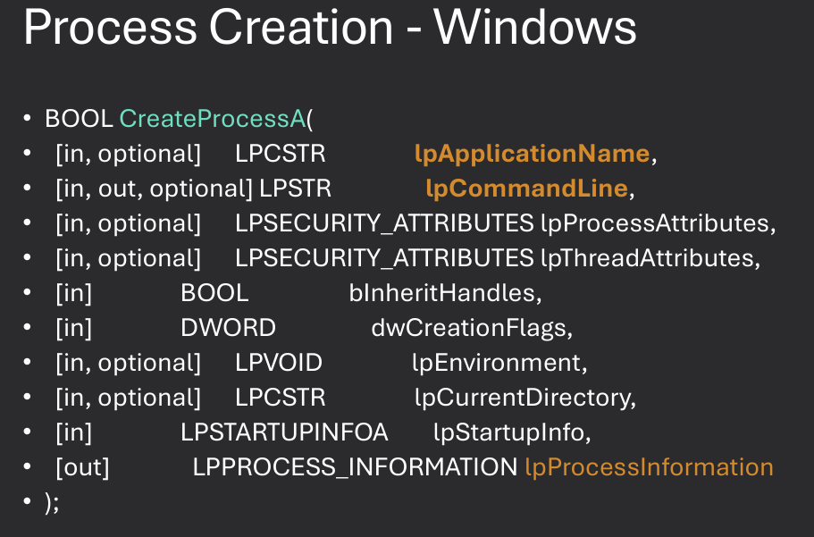
A thread is the smallest unit of execution within a process. It represents a single sequence of instructions that can be scheduled and executed independently by the operating system. Threads within the same process share the same memory space and resources, allowing for efficient communication and data sharing. This makes threads more lightweight than processes, which have separate memory spaces.
Single Execution Context within a process - Each thread has its own execution context, including a program counter, stack, and registers. Sometimes called a lightweight process. Older generation processes had a single thread. Single core processors meant only 1 program could run at a time.
Each thread has its own stack, registers, and program counters. Threads within the same process share memory and resources, making context switching between threads faster than between processes. Data may be shared across threads or may be exclusive to one thread (Thread Local Storage). All threads reside within a single process and share the same memory space.
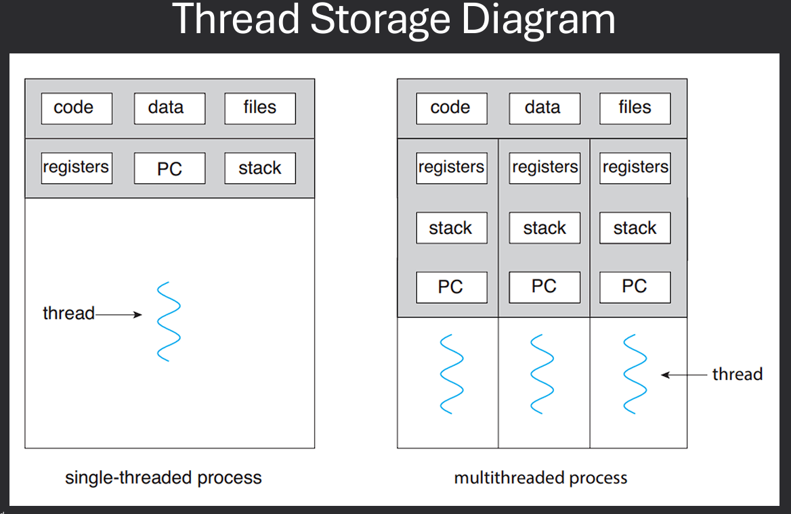
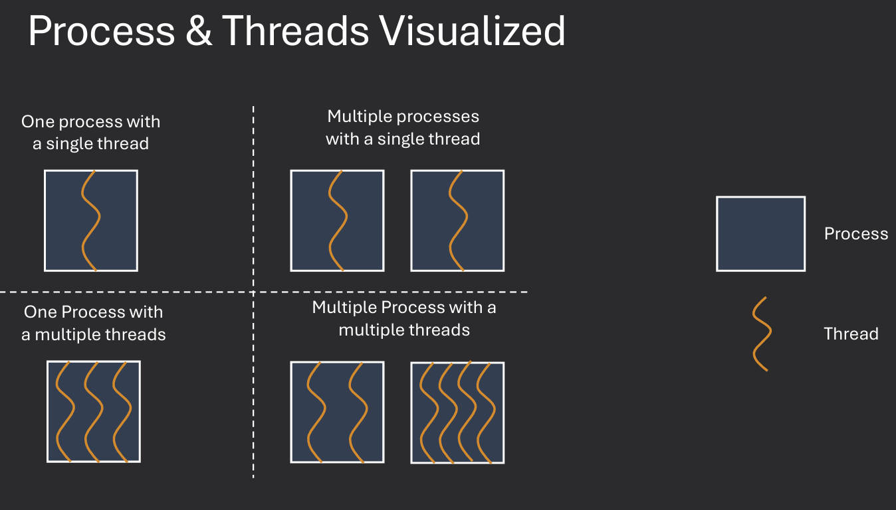
Each thread may be scheduled and run independently of other threads. Example - A web browser may have multiple threads: one for rendering the UI, another for handling user input, and others for loading web pages in the background.
If one thread is blocked (e.g., waiting for I/O), other threads in the same process can continue executing. This improves the overall responsiveness and efficiency of the application. Also allows for more background computation in a responsive application. Example - A word processor may have a background thread that periodically autosaves the document while the main thread remains responsive to user input.
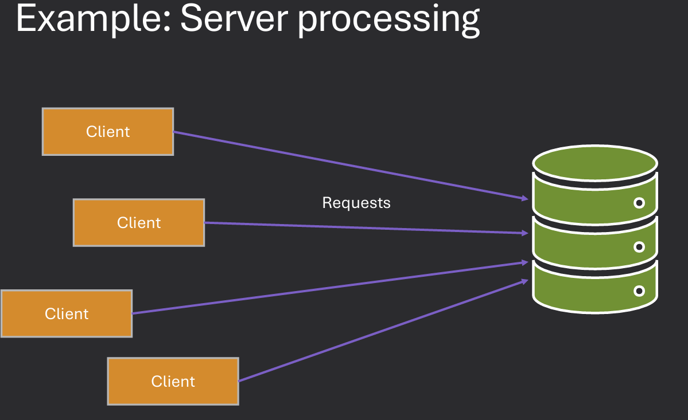
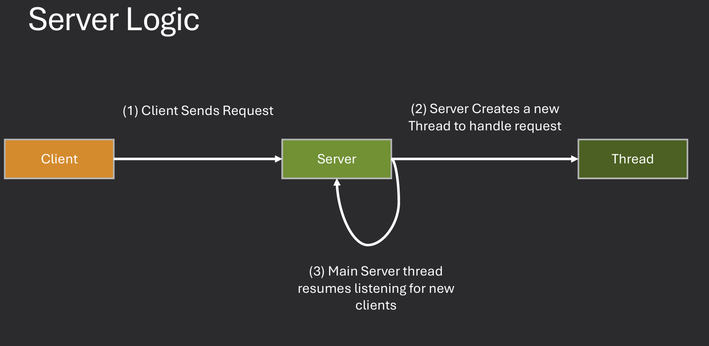
Question: How would the server run if it had to use fork() or CreateProcess() instead of threads? The server would be much slower and less efficient. Each request would require creating a new process, which is resource-intensive and time-consuming.
Question: How would the server run if it could not use threads OR make a new process? The server would be unable to handle multiple requests concurrently. It would have to process each request sequentially, leading to increased latency and reduced throughput.
Considerations: Consider time, responsiveness, resources, potential issues
Threads are more efficient than processes because they share the same memory space and resources.
Creating and switching between threads is faster than creating and switching between processes.
However, threads can also introduce complexity, such as synchronization issues and potential data corruption if not managed properly.
Two ways of implementing threads: User-level threads and Kernel-level threads. User-level threads are managed by a user-level library, while kernel-level threads are managed directly by the operating system. User-level threads are faster to create and switch between, but they cannot take advantage of multiple CPU cores. Kernel-level threads can be scheduled on different CPU cores, but they are slower to create and switch between. OS can only be aware of kernel-level threads Implementations. Most modern operating systems provide kernel thread implementations.
User threads are created and managed by user-level libraries, allowing for faster context switching and lower overhead. However, they rely on the kernel to schedule them, which can limit their performance on multi-core systems.
Each process implemnts the concept of threads, up to the process to decide how to allocate time to each thread. Operating system is not aware of threads, only aware of processes. Therefore, if one thread makes a blocking system call, the entire process is blocked. As well as the scheduling time is allocated to the process, not the individual threads. Example - A web server using user-level threads may have multiple threads handling different client requests. If one thread blocks on a network operation, the entire process is blocked, preventing other threads from executing.
Kernel threads are managed by the operating system kernel, allowing for better utilization of multi-core processors. The kernel is aware of all threads and can schedule them independently on different CPU cores.
Each process can have multiple kernel threads, and the operating system can allocate CPU time to each thread individually. This allows for true parallelism, as multiple threads can be executed simultaneously on different cores. However, kernel threads also have higher overhead compared to user threads, as the kernel must manage their creation, scheduling, and synchronization. Example - A web server using kernel threads can handle multiple client requests concurrently, even if one thread is blocked on a network operation. Other threads can continue executing, improving overall responsiveness and throughput.
There are alos "Hybrid Threads" implementations that combine aspects of both user-level and kernel-level threads. These map one or more user threads to a single kernel thread, allowing for efficient context switching while still taking advantage of multi-core processors. Example - The Java Virtual Machine (JVM) uses a hybrid threading model, where Java threads are mapped to native OS threads. This allows Java applications to benefit from the performance of user-level threads while still being able to utilize multiple CPU cores.
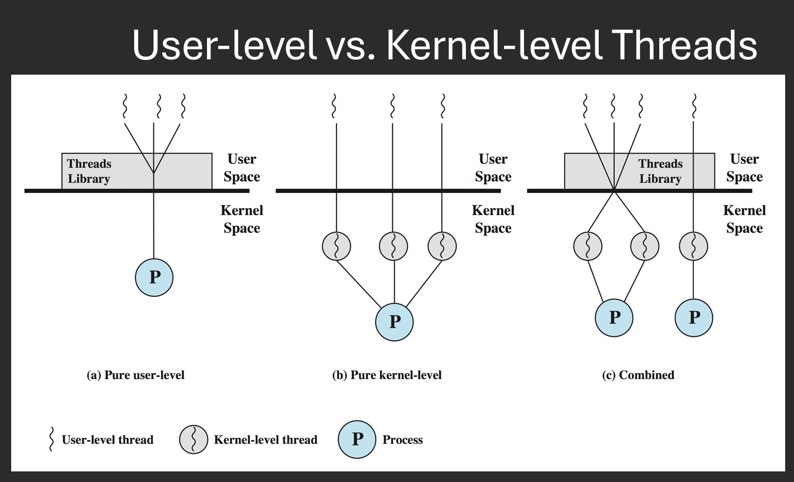
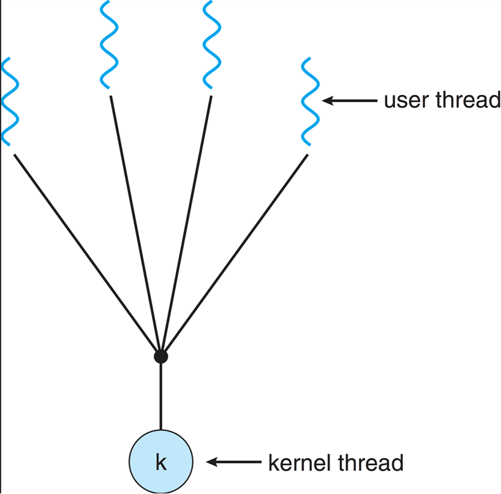
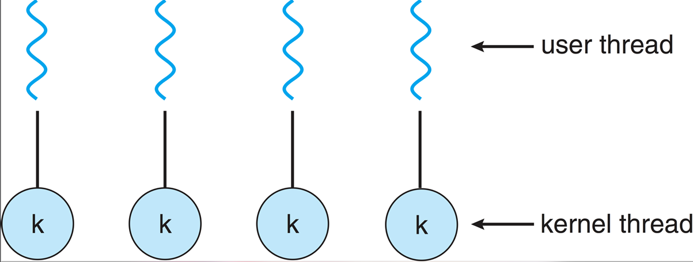
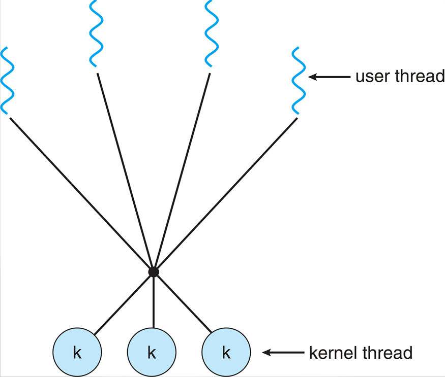
CPU scheduling is the process by which the operating system decides which process or thread should be given access to the CPU at any given time. The goal of CPU scheduling is to maximize CPU utilization, minimize response time, and ensure fairness among processes. The OS uses a variety of algorithms to determine the order in which processes are scheduled to run on the CPU.
A typical computer system has one or more CPUs, each with one or more cores. Each core can execute one thread at a time. Systems have multiple processes to schedule on the CPU. May have multiple threads per process. Goal: Determine how to share execution time among all threads wishing to run on the CPU. The OS must decide which thread to run next, how long to run it, and when to switch to another thread.
Think: When deciding what process / thread to run, what would you consider?
I would consider factors such as priority, resource requirements, and fairness.
I.E. how would you decide one thread "deserves" to run over another?
I would consider factors such as the thread's priority, how long it has been waiting, and its resource requirements.
Schedulers must decide which processes to run and how long a processes should run. Schedulers also have a set of goals to try and achieve. Some common goals include:
CPU scheduling decisions can impact overall system performance and resource utilization. Inefficient scheduling can lead to high CPU consumption, increased power usage, and reduced system responsiveness. It is essential for operating systems to implement effective scheduling algorithms that balance competing goals and optimize resource usage.
Processes have two phases: CPU burst and I/O burst. During a CPU burst, the process is actively using the CPU to execute instructions. During an I/O burst, the process is waiting for I/O operations to complete (e.g., reading from disk, waiting for user input). The CPU scheduler must decide which process to run during CPU bursts and manage transitions between CPU and I/O bursts.
CPU bound process which requires a lot of CPU time, with long CPU bursts and short I/O bursts. I/O bound process which requires a lot of I/O operations, with short CPU bursts and long I/O bursts. A balanced process which has a mix of CPU and I/O bursts.
Whenever a different process / thread takes the CPU, this is called a context switch. Context switches can be expensive, as they require saving the state of the current process and loading the state of the new process. Changes process descriptor, memory mappings, cache state, etc.
Preemptive scheduling allows the operating system to interrupt a currently running process in order to start or resume another process. Process is allowed to run for a quantum time period and after quantum expires, the process is removed from the CPU. This is useful for ensuring that high-priority processes receive timely access to the CPU.
Non-preemptive scheduling, on the other hand, requires a process to voluntarily yield control of the CPU before another process can be scheduled. This allows a process to run until it terminates, makes an I/O request, or explicitly yields the CPU. This can lead to issues such as starvation, where low-priority processes may never get a chance to run.
Majority of modern operating systems use preemptive scheduling to ensure responsiveness and fairness among processes. Preemptive schedulers are needed for interactive systems where responsiveness is critical. Non-preemptive schedulers are simpler to implement and can be more efficient in certain scenarios. However, they may not provide the same level of responsiveness and fairness as preemptive schedulers.
Examples of preemptive scheduling algorithms include Round Robin, Shortest Remaining Time First, and Priority Scheduling. Examples of non-preemptive scheduling algorithms include First-Come, First-Served (FCFS) and Shortest Job Next (SJF).
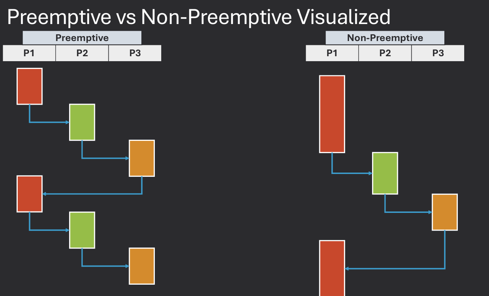
Processes that are ready to execute are stored in a ready queue (often called a ready list). This list is a linked list of pointers to process or thread descriptors. LINUX: task_struct. Windows: EPROCESS. The scheduler selects the next process to run from this queue based on the scheduling algorithm in use. When a process is running, it is removed from the ready queue. When it is blocked (e.g., waiting for I/O), it is moved to a wait queue. Ordering, structure, and selection process are determined by the scheduling algorithm.
When a CPU core is available, the scheduler removes a process from the ready queue and assigns it to the CPU (moves it to execute). The process run until it removed and replaced by another process. Some reasons for switching processes include:
There are several key metrics used to evaluate the performance of a CPU scheduler:
There are several scheduling algorithms used by operating systems to manage process execution. Each algorithm has its own strengths and weaknesses, and the choice of algorithm can significantly impact system performance.
FCFS is the simplest scheduling algorithm. In this approach, processes are executed in the order they arrive in the ready queue. The first process to arrive is the first to be executed, and so on.
While FCFS is easy to implement and understand, it has some significant drawbacks:
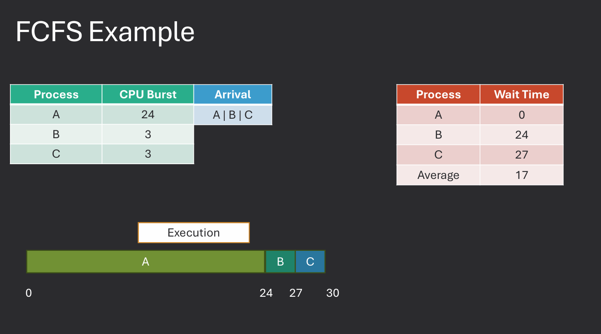
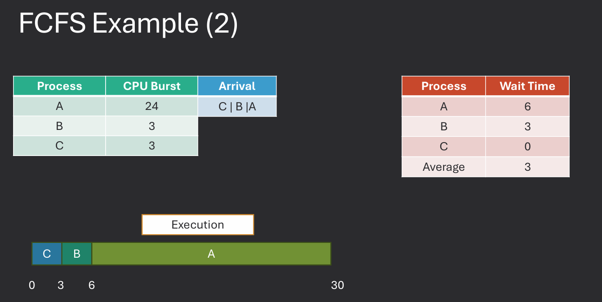
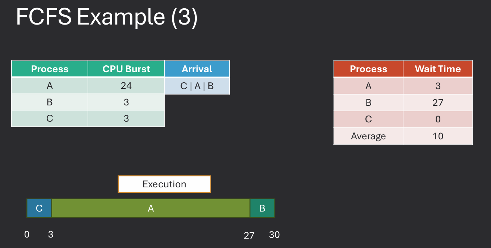
Practice Problem in Moodle.
SJF is a scheduling algorithm that selects the process with the shortest estimated run time to execute next. This approach aims to minimize the average waiting time for processes in the ready queue. SJF can be implemented in both preemptive and non-preemptive forms. In the preemptive version, known as Shortest Remaining Time (SRT), a running process can be interrupted if a new process arrives with a shorter estimated run time.
While SJF can significantly improve average waiting times, it also has some challenges:
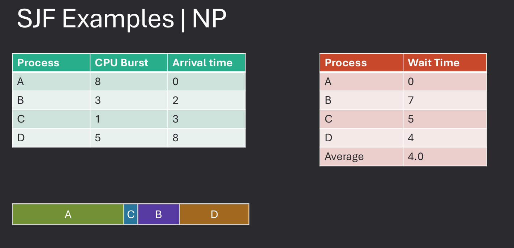
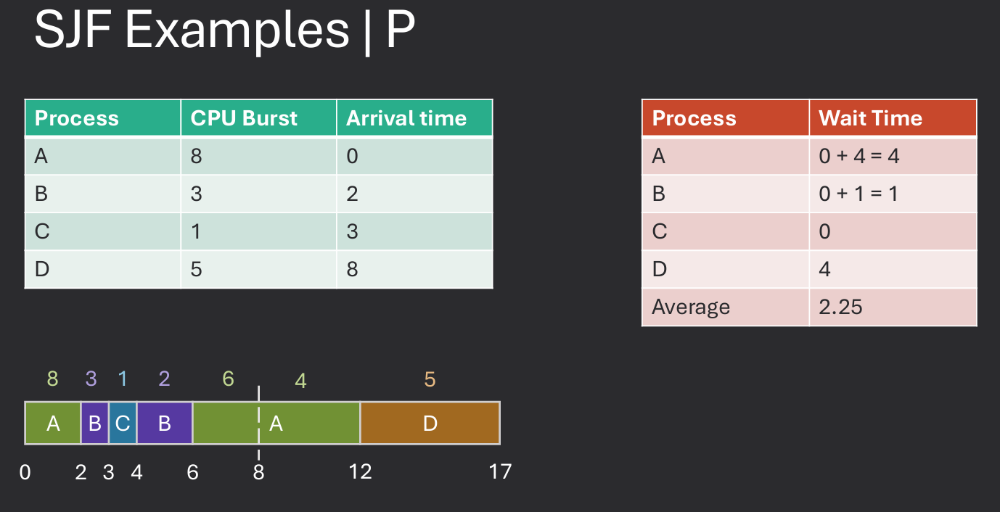
Practice Problem in Moodle.
Our examples used a known burst duration for a given process. Unrealistic, won't know exatc CPU burst needed. Bursts may vary over time. Burst may change based on conditions of a system. Instead of an exact value, could we estimate CPU burst time? Yes, we can use an exponential average to predict the next CPU burst based on previous bursts.
We can use the following formula to calculate the predicted burst time:
Predicted Burst Time = α * Actual Burst Time + (1 - α) * Previous Predicted Burst Time
α (alpha) is a weighting factor between 0 and 1.Actual Burst Time is the time taken by the process in the last execution.Previous Predicted Burst Time is the predicted time from the last execution.
By adjusting the value of α, we can control the sensitivity of the prediction:
α gives more weight to the most recent burst time.α smooths out the predictions over time.This approach allows us to adapt to changing conditions and improve the accuracy of our burst time predictions.
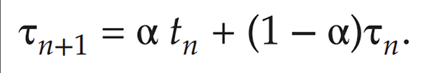
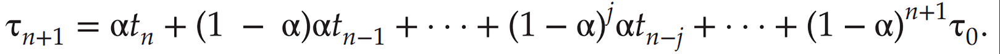
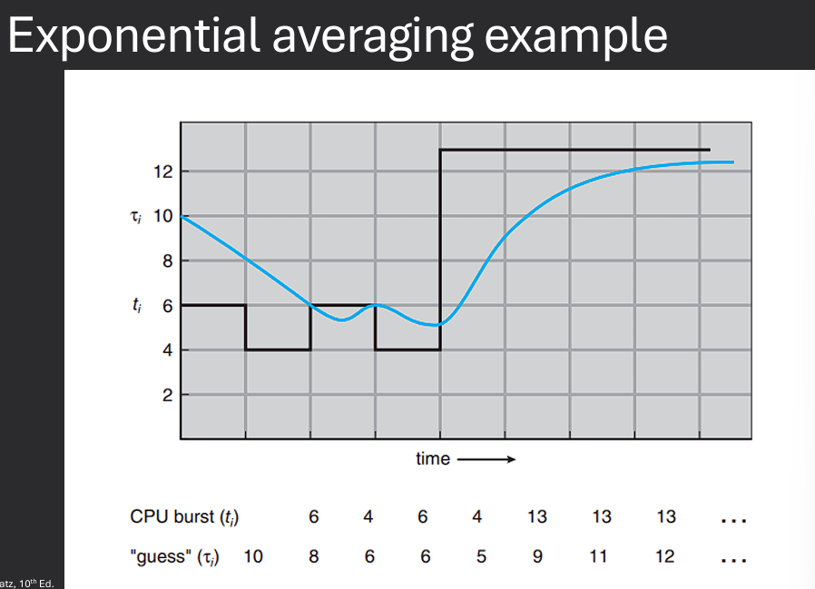
Priority scheduling is a method of scheduling processes based on their priority levels. Each process is assigned a priority, and the scheduler selects the process with the highest priority to run next. Priorities can be assigned based on various factors, such as the importance of the task, resource requirements, or user-defined settings. Can be preemptive or non-preemptive. In preemptive priority scheduling, if a higher-priority process becomes ready to run, it can preempt the currently running process. In non-preemptive priority scheduling, the currently running process continues until it finishes or voluntarily yields the CPU.
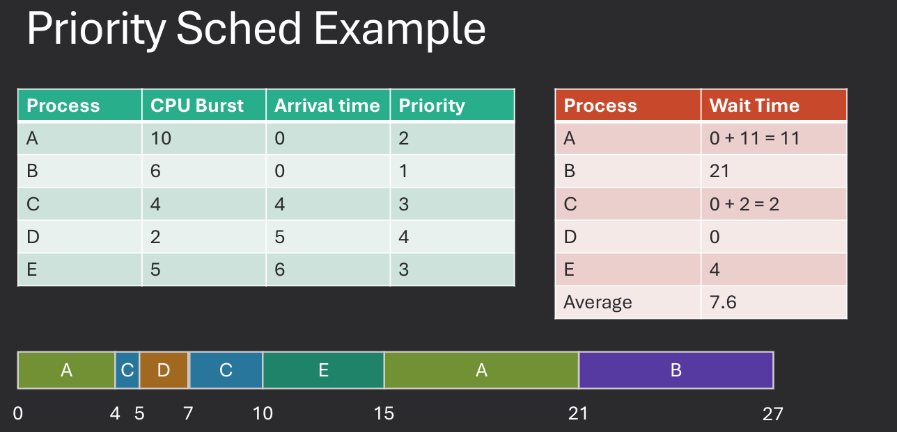
Round Robin (RR) scheduling is a preemptive scheduling algorithm that assigns a fixed time slice (quantum) to each process in the ready queue. The scheduler cycles through the processes, allowing each one to run for its allocated time slice before moving on to the next process. This approach ensures that all processes receive a fair share of CPU time and helps prevent starvation. The choice of quantum size is crucial for the performance of the RR algorithm. A very small quantum can lead to excessive context switching, while a very large quantum can result in poor responsiveness for interactive processes. A common approach is to set the quantum to a value that balances responsiveness and context switch overhead.
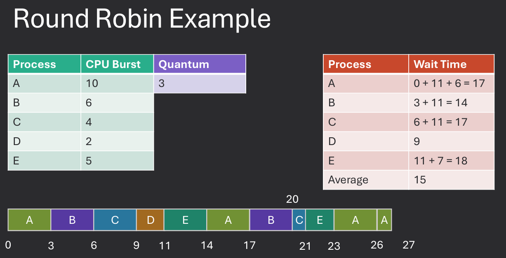
Practice Problem in Moodle.
Multilevel queue scheduling is a method that divides the ready queue into several separate queues, each with its own scheduling algorithm. Processes are assigned to a specific queue based on their characteristics, such as priority or resource requirements. The scheduler then selects processes from each queue according to its own rules.
For example, a system might have separate queues for interactive processes, batch processes, and system processes. Each queue could use a different scheduling algorithm, such as Round Robin for interactive processes and First-Come, First-Served for batch processes. This approach allows the operating system to tailor the scheduling strategy to the specific needs of different types of processes.
Multilevel feedback queue scheduling is an extension of multilevel queue scheduling that allows processes to move between queues. This approach aims to provide a more flexible and responsive scheduling strategy by adapting to the behavior and requirements of individual processes.
In MLFQ, processes start in the highest-priority queue and are given a time slice to execute. If they do not finish within their time slice, they are moved to a lower-priority queue. Conversely, if a process in a lower-priority queue is able to complete its work quickly, it can be promoted back to a higher-priority queue.
This dynamic adjustment of process priorities helps ensure that interactive processes receive the CPU time they need while still allowing batch processes to make progress. Goals include:
Number of Queues: More queues allow for finer granularity in scheduling but increase complexity. Scheduling poicy for each queue: Different queues can use different scheduling algorithms (e.g., RR for high-priority, FCFS for low-priority). Scheduling policy between queues: Common approaches include strict priority (always select from the highest-priority non-empty queue) or time-sharing (allocate CPU time among queues). Promotion / Demotion criteria: Processes can be promoted or demoted based on their CPU usage, I/O behavior, or other factors. Starting queue: New processes can start in the highest-priority queue or a lower-priority queue based on their expected behavior.
Four queues (High, Medium, Low, Batch priority)
High through low use RR, Batch FCFS - High priority queue has the smallest quantum, Batch has the largest.
Select from High queue first, if none, select from Medium, etc.
Promotion / Demotion Criteria - If a process uses up its entire quantum, it is demoted to the next lower queue. If a process waits too long in a lower queue, it is promoted to the next higher queue.
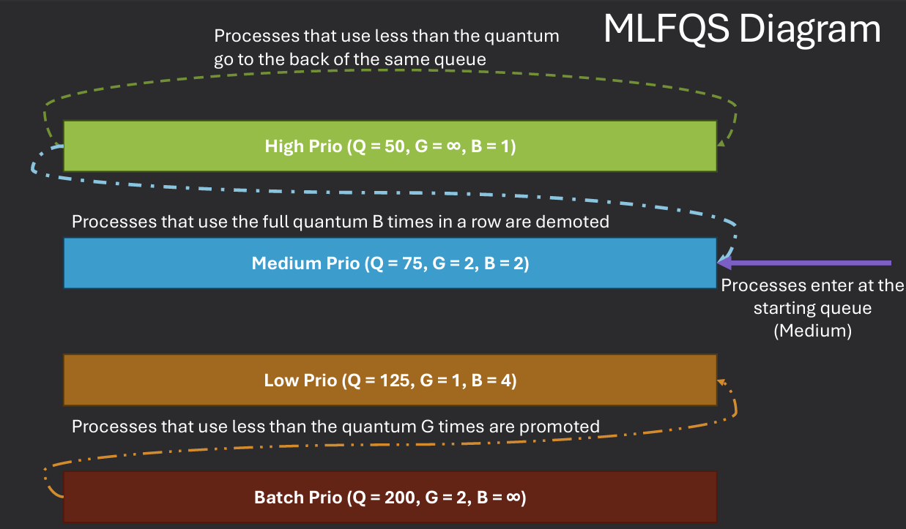
Both real-time and normal scheduling
Soft real-time scheduling is also supported, allowing for prioritization of time-sensitive tasks. Take priority over regularly scheduled processes, has real-time priority value of 0 to 99. (higher > lower). Three Algorithms: SCHED_FIFO, SCHED_RR, SCHED_OTHER
The Completely Fair Scheduler (CFS) is the default scheduler for normal processes in Linux. It aims to provide a fair distribution of CPU time among all runnable processes.
CFS uses a red-black tree to maintain the list of runnable processes, allowing for efficient selection of the next process to run. Each process is assigned a "virtual runtime" (vruntime) value, which represents the amount of CPU time it has received. The scheduler always selects the process with the smallest vruntime to run next.
Key features of CFS include:
CFS uses a red-black tree to store all runnable processes. This allows for efficient insertion, deletion, and selection of processes based on their vruntime.
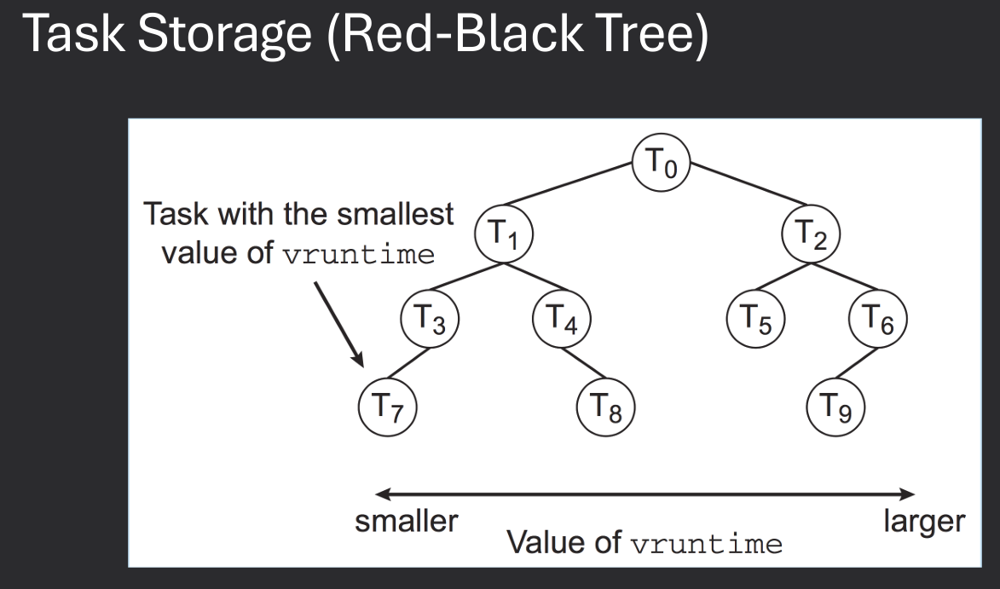
Each process has a weight based on its priority (nice value). The scheduler calculates the time slice for each process based on its weight. Processes with higher priority (lower nice value) receive a larger share of CPU time. The vruntime is updated based on the actual CPU time used by the process, adjusted by its weight. This ensures that processes with different priorities are treated fairly.
vruntimeVR_{new} as keyThe time slice for each process is calculated based on its weight and the total weight of all runnable processes. This ensures that each process receives a fair share of CPU time relative to its priority. The base timeslice is defined by the sched_latency parameter,
EEVDF is a scheduling algorithm that aims to provide fair CPU time allocation while also considering process deadlines. It is designed to work alongside CFS to improve the responsiveness of time-sensitive tasks.
Deterministic modeling involves using mathematical models and simulations to evaluate the performance of scheduling algorithms. By analyzing various scenarios and workloads, we can predict how different scheduling strategies will perform under specific conditions. This approach allows us to identify potential bottlenecks, optimize resource allocation, and improve overall system performance.
The advantages of deterministic modeling is it is simple and it use real numbers for calculations, making it easier to understand and analyze.
The disavantages is it require real numbers and need many examples to be effective.
Queuing models are mathematical representations of systems that involve waiting lines or queues. They are used to analyze the performance of scheduling algorithms by modeling the arrival and service processes of tasks. By studying the behavior of queues, we can gain insights into system performance metrics such as average waiting time, throughput, and resource utilization.
The advantages of queuing models is it can model complex systems and provide insights into system performance.
The disadvantages is it can be complex and require assumptions about arrival and service processes. Math can get very complicated.
Simulation involves creating a virtual model of a system and running experiments to evaluate the performance of scheduling algorithms. By simulating different workloads and scenarios, we can observe how various scheduling strategies perform in practice. This approach allows us to test the effectiveness of algorithms under realistic conditions and identify potential issues that may not be apparent through theoretical analysis alone.
The advantages of simulation is it can model complex systems and provide insights into system performance under realistic conditions.
The disadvantages is it can be time-consuming and require significant computational resources.
Implementation involves integrating scheduling algorithms into real operating systems and measuring their performance in live environments. By deploying algorithms in production systems, we can gather empirical data on their effectiveness and impact on system performance. This approach provides valuable insights into the practical challenges of implementing scheduling strategies and allows for real-world validation of theoretical models.
The advantages of implementation is it provides real-world validation and insights into practical challenges.
The disadvantages is it can be risky and may impact system stability and performance.
Multi-core scheduling involves distributing tasks across multiple CPU cores to improve performance and resource utilization. This approach requires new scheduling strategies that can effectively manage parallel workloads and minimize contention between processes.
Key concepts in multi-core scheduling include:
In asymmetric multiprocessing (AMP), each core is assigned specific tasks or functions, and the operating system manages the distribution of workloads. This approach can lead to improved performance for specialized tasks but may result in underutilization of certain cores. In symmetric multiprocessing (SMP), all cores are treated equally, and the operating system dynamically schedules tasks across all available cores. This approach allows for better load balancing and resource utilization but may introduce additional overhead due to increased contention between processes.
Asymmetric is simple but can lead to bottlenecks meaning that certain cores may become overloaded while others are underutilized. While symmetric is more complex and no single core bottleneck can occur meaning all cores can be utilized effectively.
In symmetric multiprocessing (SMP) systems, each CPU core typically maintains its own ready queue to manage the processes that are ready to execute. This approach allows for efficient scheduling and load balancing across multiple cores. When a core becomes idle, it selects the next process from its own ready queue to execute. If a core's ready queue is empty, it may attempt to steal processes from other cores' queues to maintain high CPU utilization.
Single ready queue - all processes stored in a single queue shared by all cores. This approach simplifies scheduling but can lead to contention and bottlenecks as all cores compete for access to the same queue. Locking bottlenecks may occur if multiple cores try to access the queue simultaneously.
Per-core ready queues - each core has its own dedicated ready queue. This approach reduces contention and allows for more efficient scheduling, as each core can manage its own queue independently. However, it may lead to load imbalances if certain cores become overloaded while others remain underutilized.
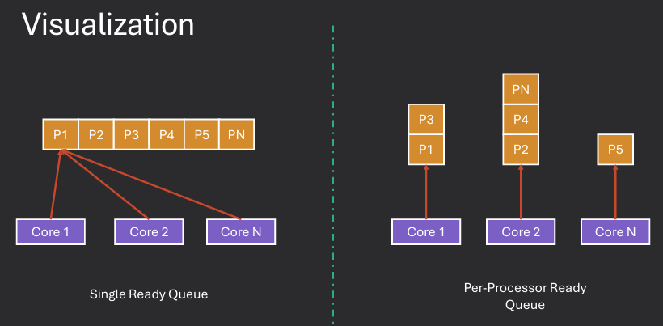
Memory stalls occur when a CPU core is forced to wait for data to be fetched from memory, leading to idle cycles and reduced performance. In SMP systems, memory stalls can be exacerbated by contention for shared memory resources, as multiple cores may attempt to access the same memory locations simultaneously. To mitigate memory stalls, operating systems can implement techniques such as cache coherence protocols, which ensure that each core has a consistent view of memory. Additionally, scheduling algorithms can be designed to minimize contention by distributing workloads in a way that reduces simultaneous access to shared memory.
While stalled, no more instructions can be executed until the required data is available, leading to potential performance degradation. The solution is Chip Multi Threading (CMT), which allows multiple threads to be executed on a single core by altering their execution. This approach can help hide memory latency and improve overall system throughput.
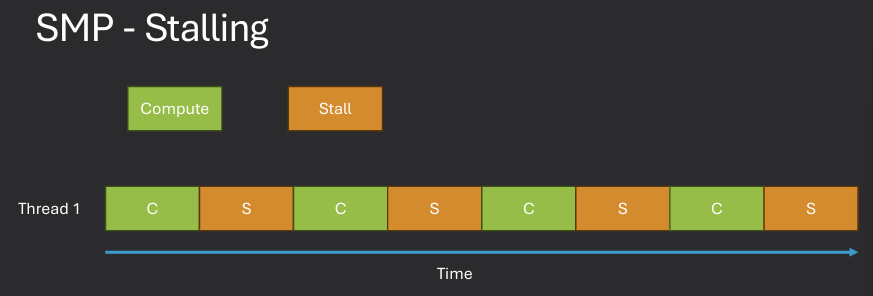
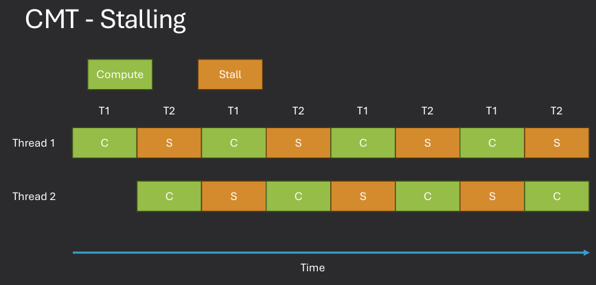
Load balancing and processor affinity are two important concepts in multi-core scheduling that aim to optimize CPU utilization and performance.
Load balancing involves distributing workloads evenly across all available CPU cores to prevent bottlenecks and ensure optimal resource utilization.
This approach helps to maximize overall system throughput and responsiveness by ensuring that no single core becomes overloaded while others remain underutilized.
Processor affinity, on the other hand, involves assigning processes to specific CPU cores based on their resource requirements and execution characteristics.
By maintaining affinity, the operating system can take advantage of cache locality and reduce context switch overhead
This can lead to improved performance for processes that frequently access the same data or require specific hardware resources.
Load balancing focuses on distributing workloads evenly across all cores to maximize CPU utilization, while processor affinity aims to optimize performance by keeping processes on specific cores to take advantage of cache locality and reduce context switch overhead.